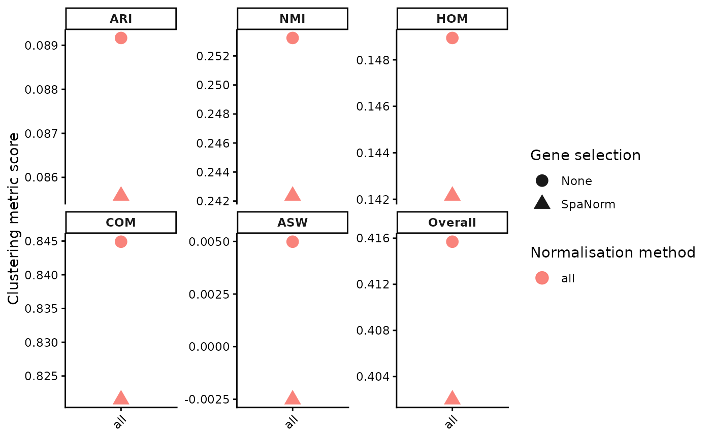

Plot BANKSY gene-selection clustering metrics
Source:R/clustering_runner.R
plot_gene_selection_metrics.RdVisualise BANKSY clustering performance across normalisation methods and gene-selection strategies.
Usage
plot_gene_selection_metrics(
metrics_df,
metrics = c("ARI", "NMI", "HOM", "COM", "ASW", "Overall"),
point_size = 4,
point_alpha = 0.9,
ncol = 3,
scales = "free_y",
palette = NULL,
shapes = NULL,
method_order = NULL,
gene_selection_order = NULL,
theme_name = "classic",
rotate_x = 45
)Arguments
- metrics_df
Data frame returned by calculate_gene_selection_metrics().
- metrics
Character vector of clustering metrics to display.
- point_size
Point size.
- point_alpha
Point opacity.
- ncol
Number of facet columns.
- scales
Facet scales. One of "fixed", "free", "free_x", or "free_y".
- palette
Optional named colour vector for normalisation methods.
- shapes
Optional named numeric vector specifying plotting symbols for gene-selection strategies.
- method_order
Optional ordering of normalisation methods.
- gene_selection_order
Optional ordering of gene-selection strategies.
- theme_name
Plot theme. One of "classic", "bw", "minimal", or "gray".
- rotate_x
Angle of x-axis labels.
Details
Points are coloured by normalisation method and distinguished by shape according to gene selection.
Metrics are displayed in separate facets.
Examples
data(norm_example)
banksy_genes <- run_banksy_gene_selection(
norm_list = norm_example,
methods = names(norm_example),
gene_selection = "all",
assay_name = "logcounts",
k_geom = 15,
lambda = 0.8,
resolution = 0.2,
seed = 123
)
#> Computing neighbors...
#> Spatial mode is kNN_median
#> Parameters: k_geom=15
#> Done
#> Done
#> Using seed=123
#> Using seed=123
#> Computing neighbors...
#> Spatial mode is kNN_median
#> Parameters: k_geom=15
#> Done
#> Done
#> Using seed=123
#> Using seed=123
metrics_genes <- calculate_gene_selection_metrics(
banksy_list = banksy_genes,
ground_truth_col = "layer_guess"
)
p_genes <- plot_gene_selection_metrics(
metrics_df = metrics_genes,
point_size = 4,
ncol = 3,
scales = "free_y",
theme_name = "classic"
)
p_genes$plot
